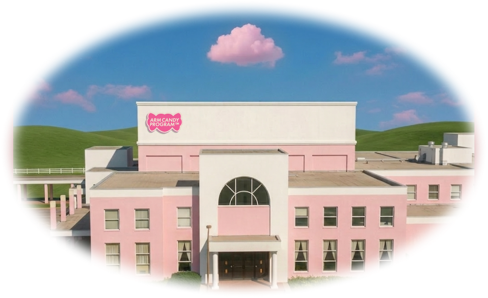
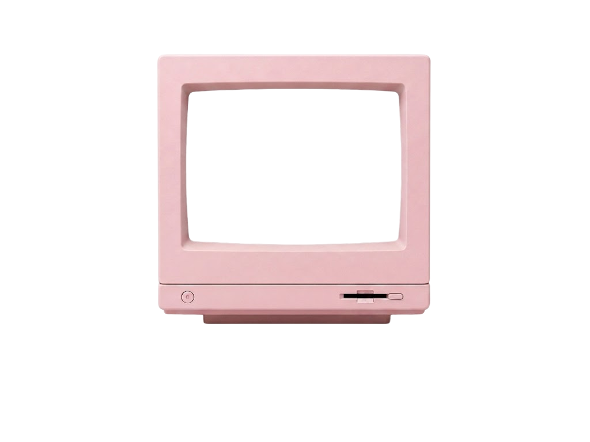
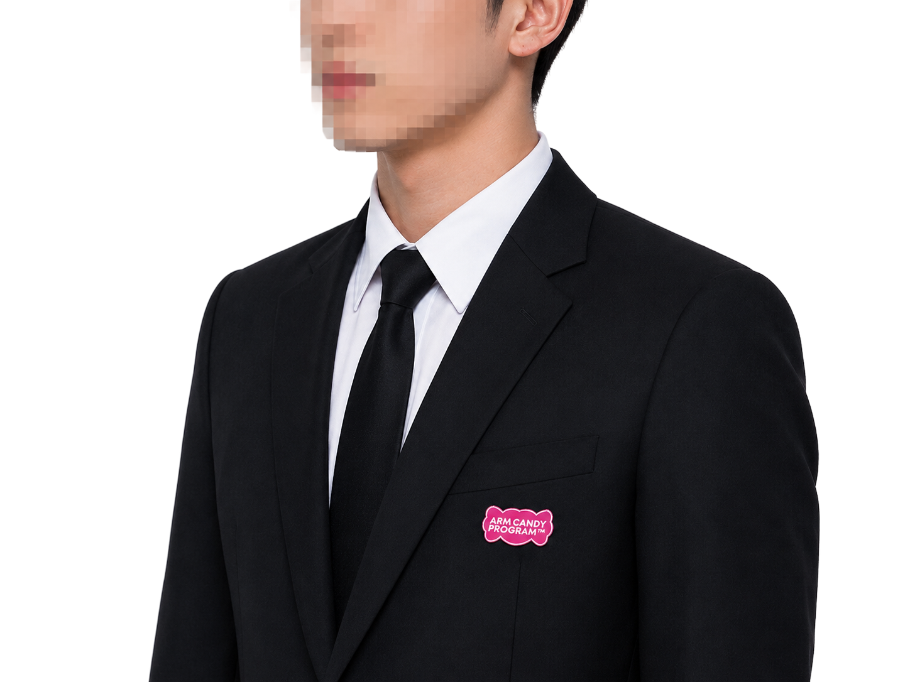
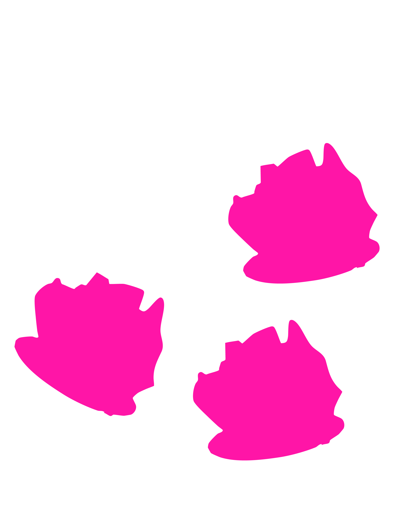
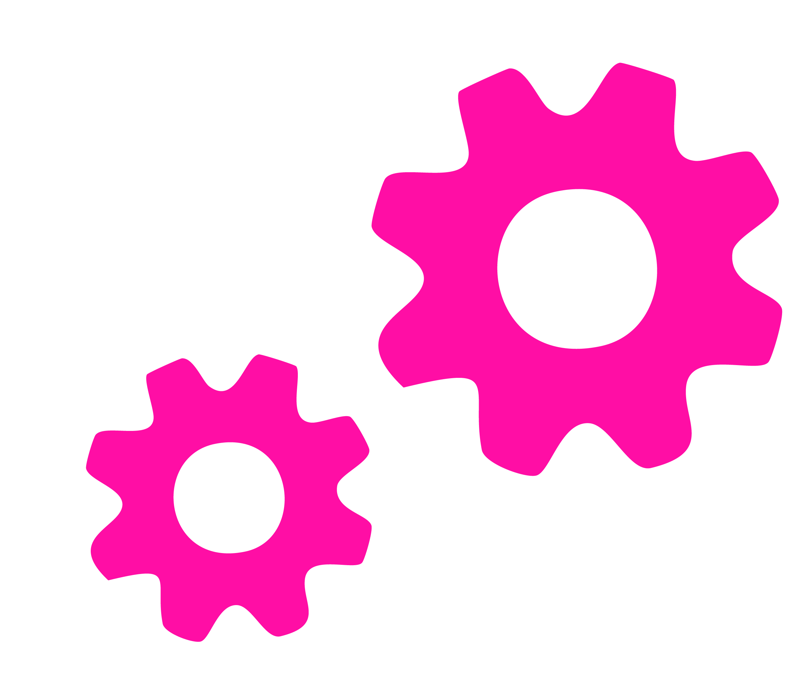
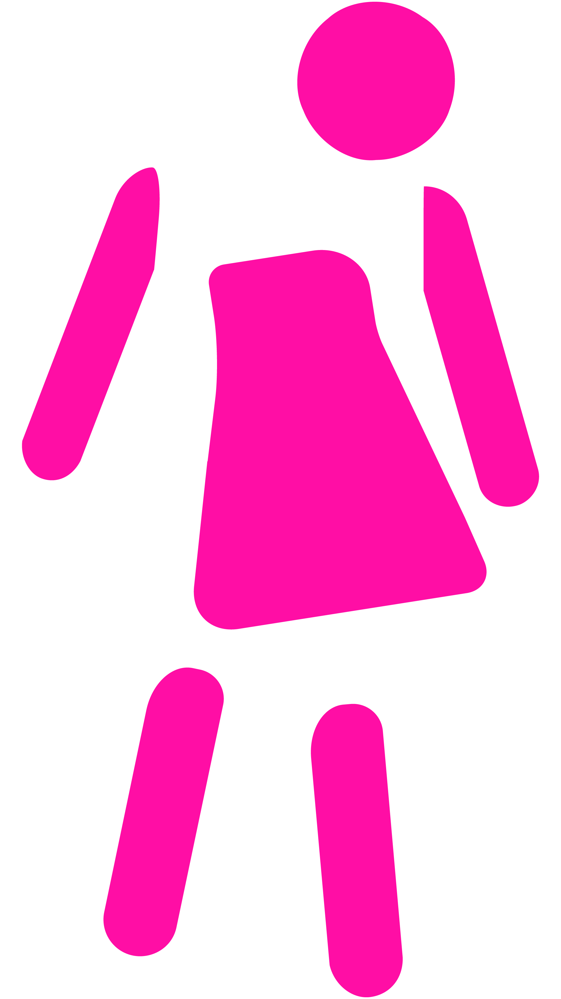

ARM CANDY PROGRAM™은 왜곡된 여성상을 이상화하고 있으며, 가부장적 사회 속 억압된 여성상을 정상으로 설정하고 있는 가상의 프로그램이다. 본 프로그램에서는 여성에 대한 고정관념, 외모에 대한 강박, 순응과 통제에 관한 내용을 옳다고 묘사하고 있다. 프로그램에서 제시한 기준은 사회가 여성에게 요구해 온 부적절한 이미지를 바탕으로 만들어졌으며 프로그램을 시작하기 전 위 내용을 충분히 인지해야 한다. 해당 웹사이트는 가상의 프로그램인 ARM CANDY PROGRAM™의 웹사이트로 해당 웹사이트 내에서 제시되는 모든 개념과 기준은 현실의 가치판단이나 행동 지침을 의미하지 않으며, 사회가 만들어 온 여성성, 정상성, 그리고 성 역할에 대한 고정관념을 비판적으로 탐구하기 위한 허구적 설정이다. ARM CANDY PROGRAM™이라는 왜곡된 여성상을 이상으로 제시하는 가상의 교정 프로그램을 통해, 사회가 요구하는 정상의 기준과 여성성이 소비되어 온 방식을 되돌아보고, 우리가 당연하게 받아들여 온 여성성의 의미에 대해 질문을 던지고자 한다.
BUY A MORE PERFECT LIFE · FREE YOURSELF FROM BEING ABNORAML
BUY A MORE PERFECT LIFE · FREE YOURSELF FROM BEING ABNORAML
BUY A MORE PERFECT LIFE · FREE YOURSELF FROM BEING ABNORAML
THE MOST PERFECT PROGRAM FOR YOU
THE MOST PERFECT PROGRAM FOR YOU

개인에게 맞는 맞춤형 교정 프로그램 - 대상자의 성향 테스트 후 가장 적합한
교정 유형을 배정하며, 대상자가 완벽하게 교정 될때까지 절대 포기하지 않습니다.


DON’T BE
IN PAIN ANYMORE
DON’T BE
IN PAIN ANYMORE
ARM CANDY PROGRAM은 당신을 비정상의 고통에서 해방시켜 드립니다. 전담 교정 담당자가 당신을 위해 항시 대기중이며 가장 효과적이고 합리적인 방식으로 당신을 정상으로 되돌립니다.
01
A Customized Program
개개인의 성향에 따른 맞춤
교정 프로그램을 제공합니다.
02
Eternal Staying Power
영원히 완벽해 질 수 있도록
사후 프로그램을 보장합니다.
03
Limitless Service
교정 횟수는 무한합니다.
고쳐질 때 까지 계속됩니다.
OUR 4 WEEK PROCESS
OUR 4 WEEK PROCESS
4주간의 ARM CANDY PROGRAM의 교정 프로그램 진행 과정
WEEK 1. EMPTY

현재 자신의 상태를 기록하고 이를 객관적인 지표를 통해 분석해 반복되는 올바르지 않은 패턴을 식별합니다. 해당 단계에서 교정 대상자의 주관적인 판단이나 의견은 절대 반영될 수 없습니다.
WEEK 2. MEASURE

ARM CANDY PROGRAM이 제공하는 정상적인 여성의 기준을 학습함과 동시에 교정 대상자의 현재 상태와의 간극을 좁힙니다. 대상자는 자신에게 맞는 새로운 생활 패턴을 설계하고 이를 따르게 됩니다.
WEEK 3. ASSEMBLY

앞서 설계한 이상적인 상태를 몸에 익히는 과정으로 반복과 습관화, 그리고 이를 통한 유지가 가장 중요합니다. 교정 대상자는 자신의 역할을 자연스럽게 수행할 수 있을 때 까지 이를 끊임없이 반복해야 합니다.
WEEK 4. SERVICE
마지막 단계는 교정이 완료된 정상 상태를 유지하는 과정으로 대상자는 더 이상 교정 과정과 내용을 의식하지 않아도 자연스럽게 정상 여성으로서의 역할과 삶을 살아가는 상태로 가정으로 돌아가게 됩니다.
PERFECTION THAT
LASTS FOREVER
PERFECTION THAT
LASTS FOREVER
ARM CANDY PROGRAM은 4주 간의 교정 프로그램 종료 이후에도 영원히 완벽한 정상성을 유지할 수 있도록 무료로 사후 서비스를 제공합니다.
번거로운 과정 필요없이 전화 한 통이면 서비스를 이용하실 수 있습니다.